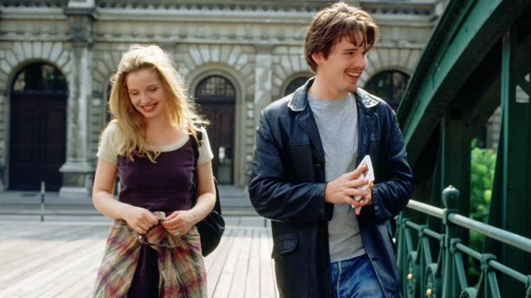
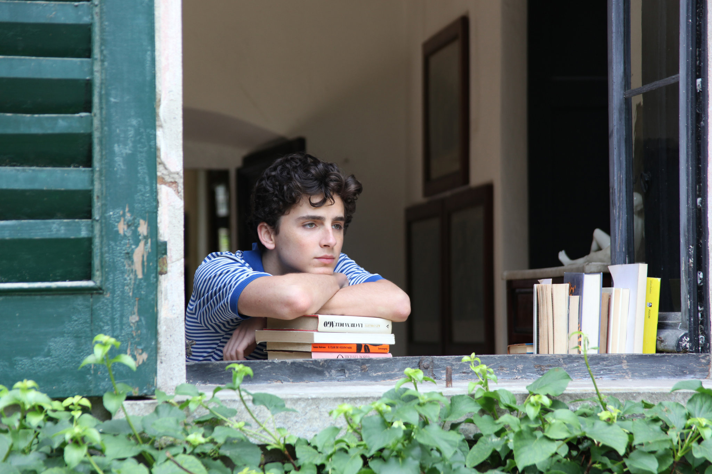
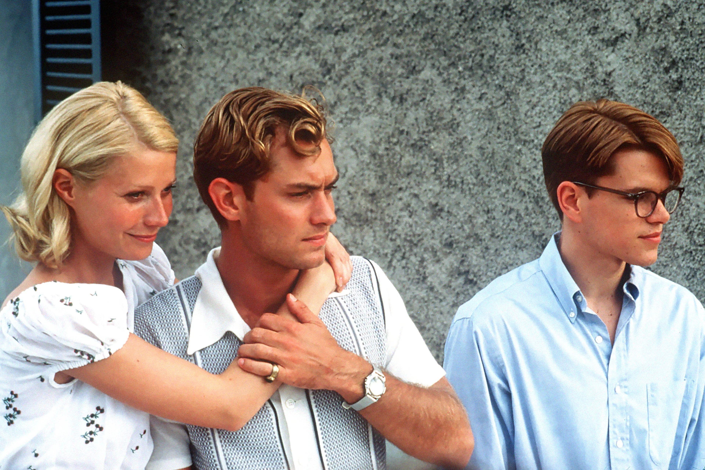
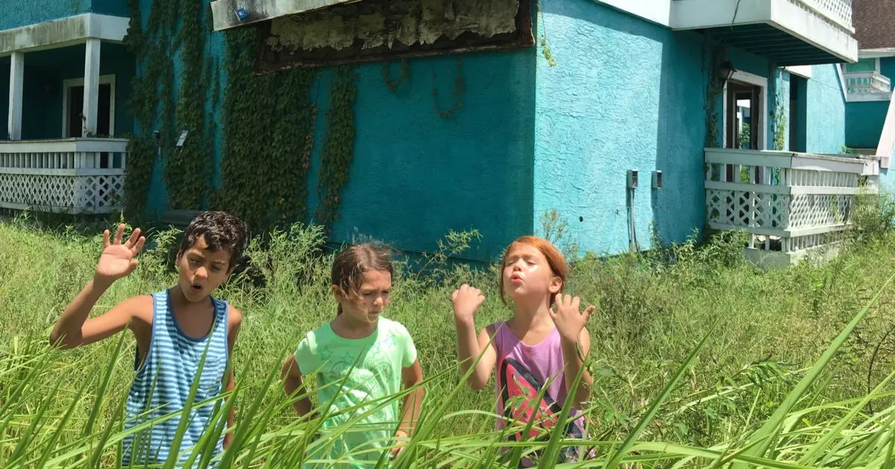
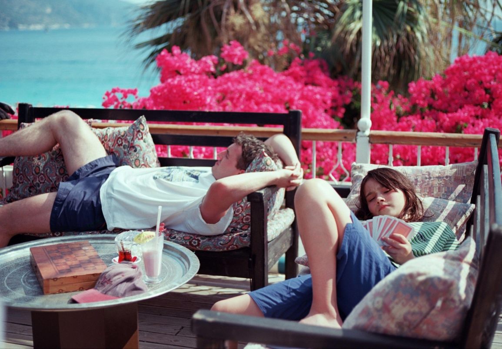

Yaz mevsiminin tam ortasındayız, bu da tek bir anlama geliyor: Tatil zamanı. Yani hemen bir sahile kaçma, buz gibi bir içecek eşliğinde hafif bir kitap okuma ve hayat boyu kötü hissettiğin tüm anları unutma vakti. Aynı zamanda şimdi, gelmiş geçmiş en iyi yaz filmlerini yeniden izlemek için de harika bir zaman (bu mevsimde Alpler’de geçen bir film izlemek kimin aklına gelir ki?); böylece şimdilik şehirde sıkışıp kalmış olsan bile kendini başka bir yerde hissedebilirsin.
Neyse ki yaz filmleri, sinema dünyasının en iyi filmleri arasında yer alıyor. The Talented Mr. Ripley ve Almost Famous gibi güneşle yıkanmış klasiklerden, The Florida Project ve Aftersun gibi hüzünlü favorilere kadar, güneşli yerlerde geçen filmler atmosferik ve rüya gibi bir his uyandırabiliyor. Ayrıca tatil kombinleri için ilham kaynağı olmaları da cabası (her erkeğin Dickie Greenleaf gibi, her kadının ise Penny Lane gibi giyinmek istemesinin bir nedeni var). Bu nedenle, şimdi izleyebileceğiniz en iyi yaz filmleri için okumaya devam edin.
5. Before Sunrise (1995)

“İtiraf etmeliyim, deli bir fikrim var ama sormazsam hayatımın geri kalanında beni rahatsız edecek...” Richard Linklater’ın Dazed and Confused sonrası filmi Before Sunrise’da Ethan Hawke, yaz boyunca Avrupa’da sırt çantasıyla seyahat eden Amerikalı bir turisti canlandırıyor. Julie Delpy ise büyükannesini ziyaret ettikten sonra Paris’e dönen güzel Fransız kız Céline rolünde. İkili, Viyana’da aniden Eurail treninden birlikte iner ve hayat değiştiren 24 saati paylaşır. Böylece, tüm tatil aşklarına meydan okuyan unutulmaz bir tatil romantizmi başlar. Film biter bitmez Avusturya’ya bir gezi planlamaya başlayacaksınız.
4. Call Me By Your Name (2017)

Tatil filmlerini benzersiz şekilde çeken yönetmen Luca Guadagnino’nun eserlerine bakacak olursak, 2015 yapımı A Bigger Splash, Tilda Swinton, Ralph Fiennes ve Dakota Johnson’ın rol aldığı ve David Hockney’nin bir tablosundan ilham alan yeniden yorumlama örnek gösterilebilir. Ancak romantik bir İtalyan atmosferi arıyorsanız 2017 yapımı Call Me By Your Name filmine yönelmelisiniz. Film, İsviçre sınırına yakın kuzey Lombardiya’da çekildi. Sahnelerin çoğunun geçtiği 16. yüzyıla ait Villa Albergoni, sinema tarihindeki en kıskanılacak evlerden biri olabilir.
3. The Talented Mr. Ripley (1999))

Tom Ripley’in cinayet eğilimleri bir yana, Patricia Highsmith’in 1950’lerde geçen romanından uyarlanan bu Hollywood filmi, Sicilya kıyısında güneşlenen inanılmaz zengin ve genetik olarak şanslı 20’li yaşlarındaki gençlerin sahnelerini arka arkaya sunuyor. Sardunya’daki renkli çiçeklerle dolu avlularda akşam yemekleri veriyor, kristal gibi mavi Akdeniz sularında yelken açıyorlar. Aynı zamanda gerçek bir tatil tarzı ustalık sınıfı film olarak da kabul ediliyor.
2. The Florida Project (2017)

Florida, Kissimmee’de, Disneyland’a yakınlığıyla bilinen yıpranmış bir banliyöde geçen Sean Baker’ın The Florida Project filmi, bekar anne Halley (Bria Vinaite) ile korkusuz altı yaşındaki kızı Moonee’nin (Brooklynn Prince) motel çevresinde takılırken geçimlerini sağlamaya çalışmasını anlatıyor. Renklerle dolu ve canlı olan film, iyi bir yaz filmi olmanın gereği görsel olarak büyüleyici bir şölen sunarken zaman zaman gözlerinizi yaşartacak dokunaklı anlar da yaşatıyor.
1. Aftersun (2022)

Biliyoruz, biliyoruz... Gelmiş geçmiş en neşeli film olmayabilir. Ama kesinlikle en dokunaklı olanlardan biri. İngiliz yönetmen Charlotte Wells’in geleceğin kült klasiği olmaya aday bu filminde, 11 yaşındaki Sophie (Frankie Corio), babası Calum’la (Paul Mescal) birlikte her şey dahil bir Türkiye tatiline çıkar. Neşe ve nostaljiyi sessiz, yıkıcı bir hüzünle harmanlayan bu yapım, jenerik bittikten çok sonra bile aklınızdan çıkmayacak.